Hot Dogs is a series of mobile web based interactive 3D animations I began developing as part of Crit in Fall 2017. "Hot Dogs Part 1" was shown with other members of Crit at Ghost Gallery in Brooklyn. It was a really fun show. Crit is awesome, I recommend anyone to apply. Since the project was just a website, I made a little poster and installed that in the gallery.
All three parts are on view at the URL hotdogs.owen.cool. It requires a mobile phone with a browser to view and headphones are recommended.
The series was originally hosted at the sites hotdogs.cool, trampoline.cool and funeral.cool. An iOS update in 2019 caused them to be mostly disabled for a while, but a new update this year has made it possible for me to revive them. I've also added the ability to interact with touch instead of the phone rotation since they're no longer being exhibited publicly.
I recently completed an animation of Hot Dogs.
These images are from the first exhibiton at Ghost Gallery in January 2018.
 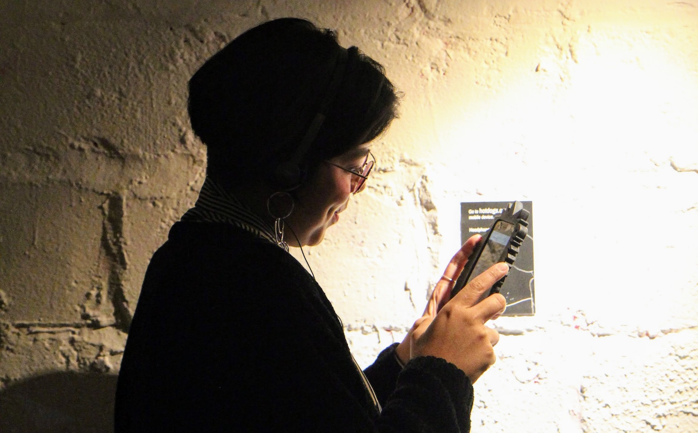
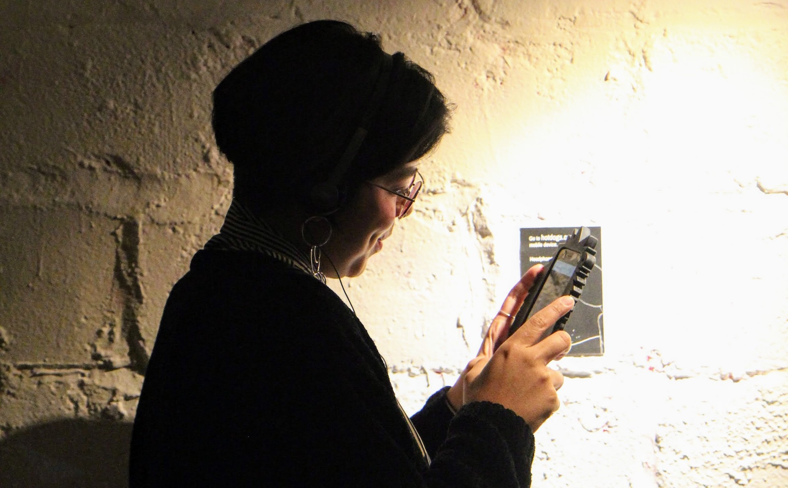


In August 2018, Trampoline was part of the Dusklit interactive art festival in Sugar Loaf NY. Here are some install photos, evidence of why I do screen based work.
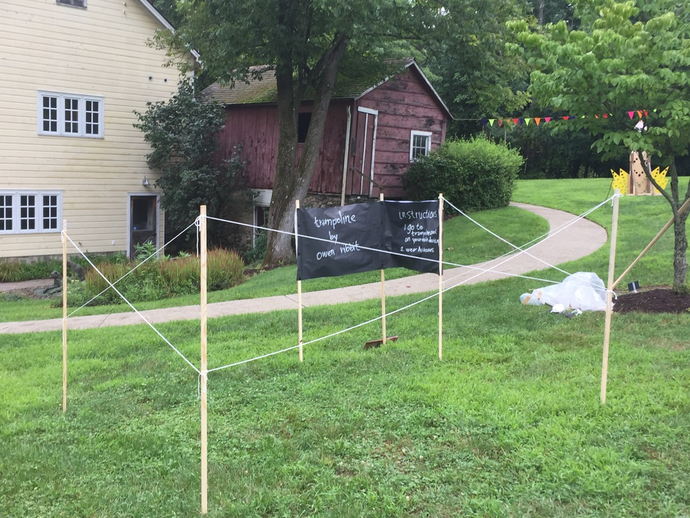 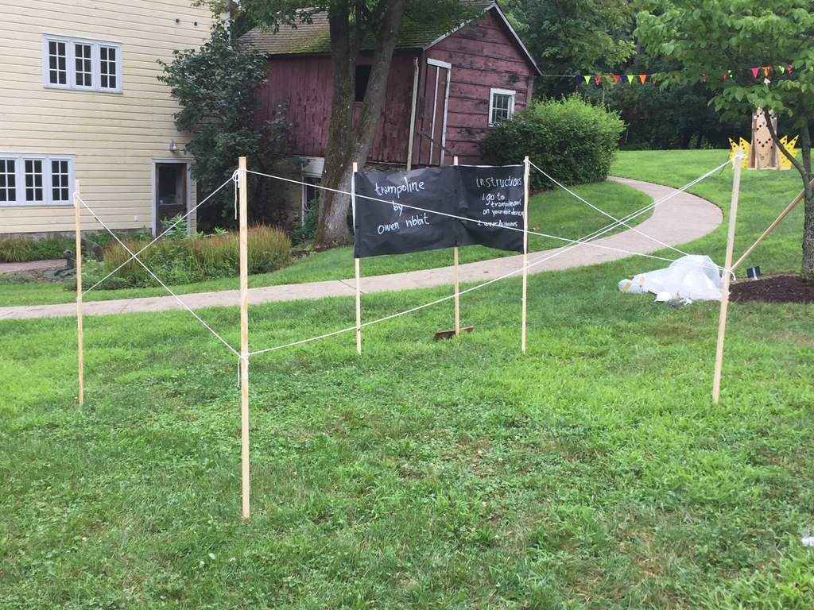 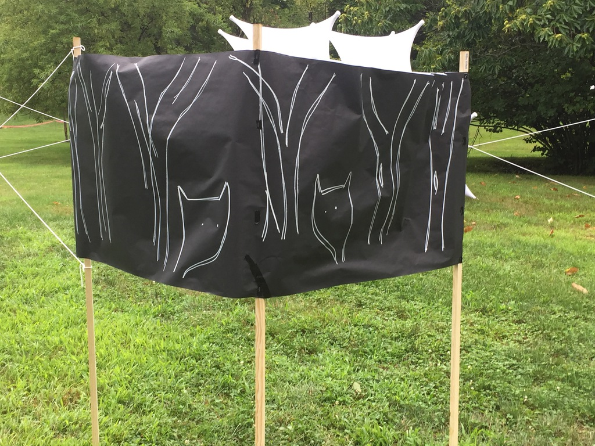 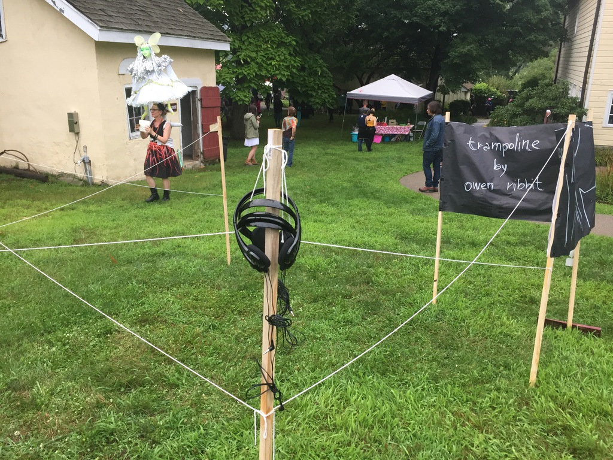Some scenes from the animation.
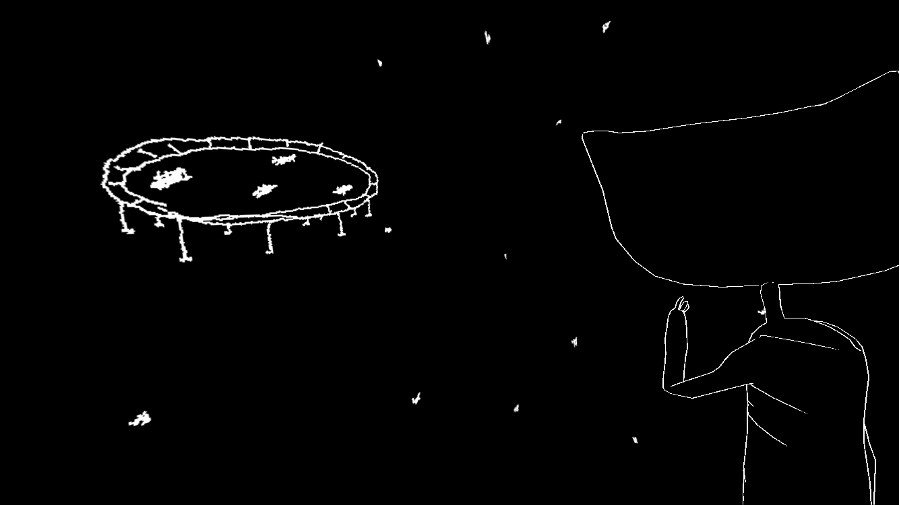 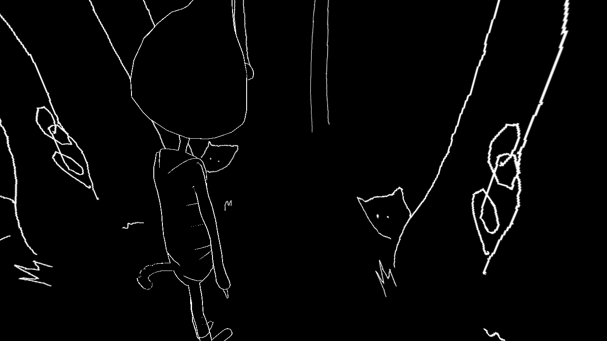 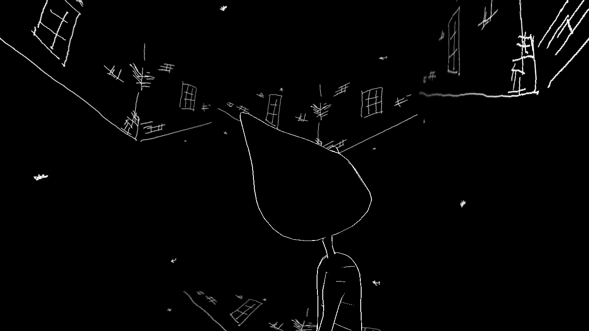 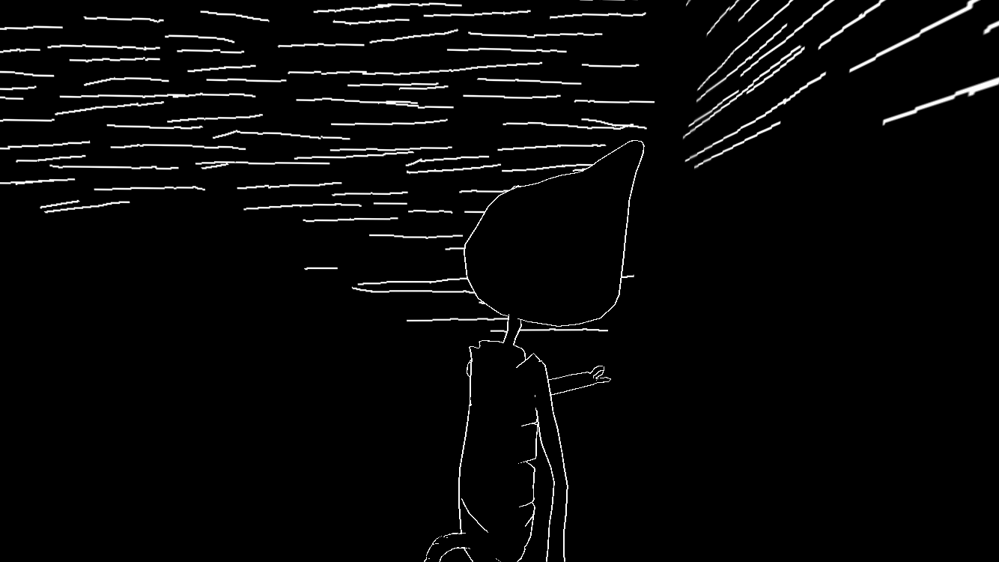The text and three drawings from the piece were included in Menagerie, part of the Menagerie show curated by Duplex, including a reading on the night the zine was released, in March 2018.
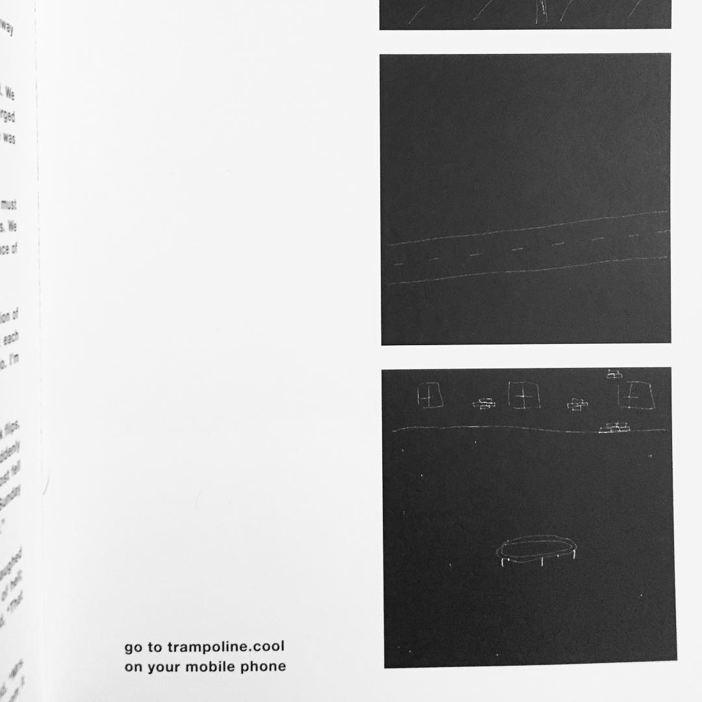Funeral was the final installment in the Hot Dog trilogy. It was exhibited at the IEEE-GEM Conference hosted by Yale's CCAM department in June 2019.
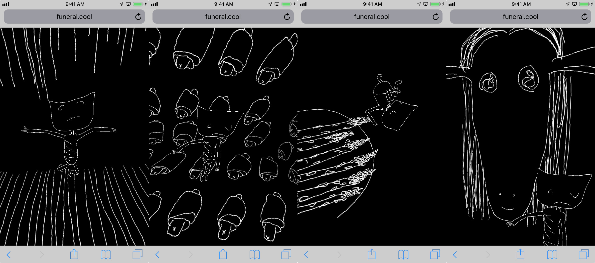 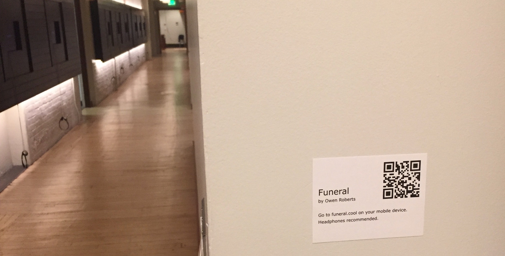 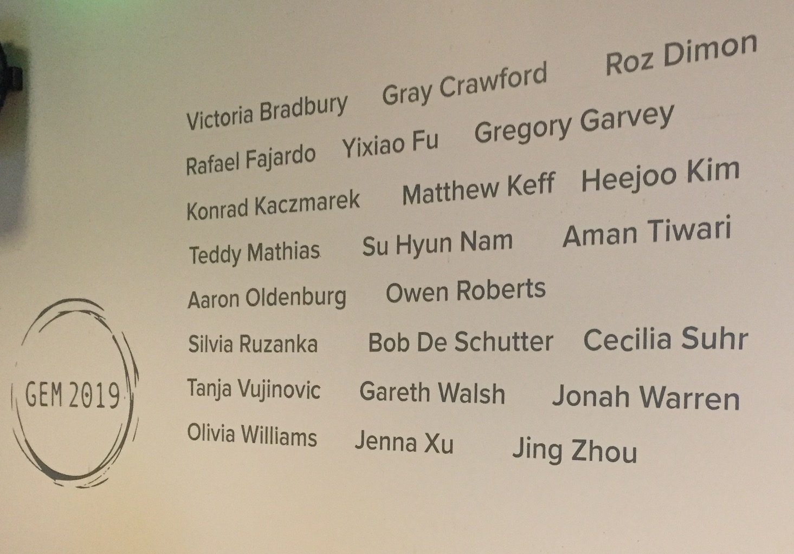I made a WebVR version using the SteroEffect code from an old Google Cardboard example . The VR experience is definitely worse than the original. The new WebVR stuff didn't work for what I built in three.js so this is a little cobbled together. Anyway, it's up and you can try it out if you have a Cardboard or Daydream or some other smart phone VR viewer.
The 2D animation in Hotdogs uses an animation tool called lines that I've been developing for a few years.
#screenshotsaturday mustard pic.twitter.com/ugWFkj5ity
— Owen Roberts (@owenribbit) December 3, 2017